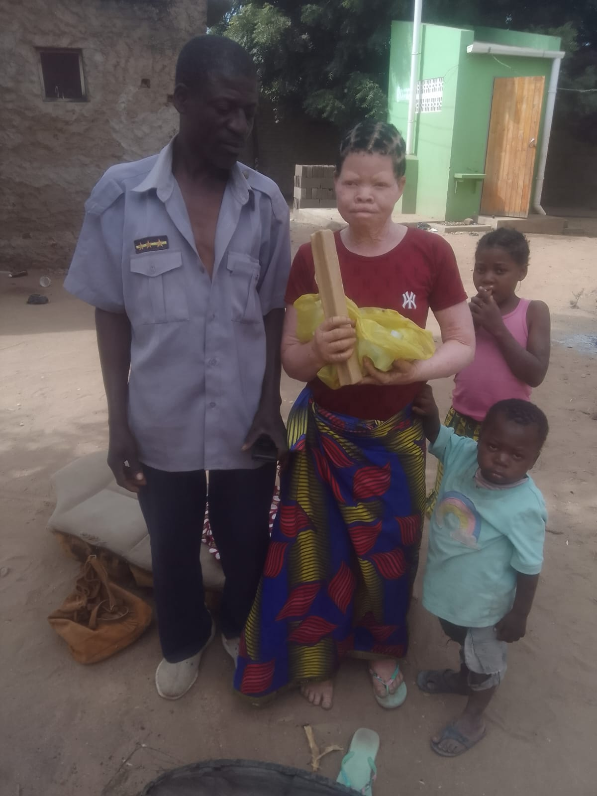

Identificação e acompanhamento de uma nova beneficiáriaIdentifying and following up a new beneficiary
Durante uma actividade na Cidade de Tete, a equipa da AZEMAP identificou uma Pessoa com Albinismo que já havia recebido protector solar em ocasiões anteriores. O caso foi encaminhado para confirmação do registo e continuidade do acompanhamento. During an activity in Tete City, the AZEMAP team identified a person with albinism who had already received sunscreen on previous occasions. The case was referred for registration confirmation and continued follow-up.